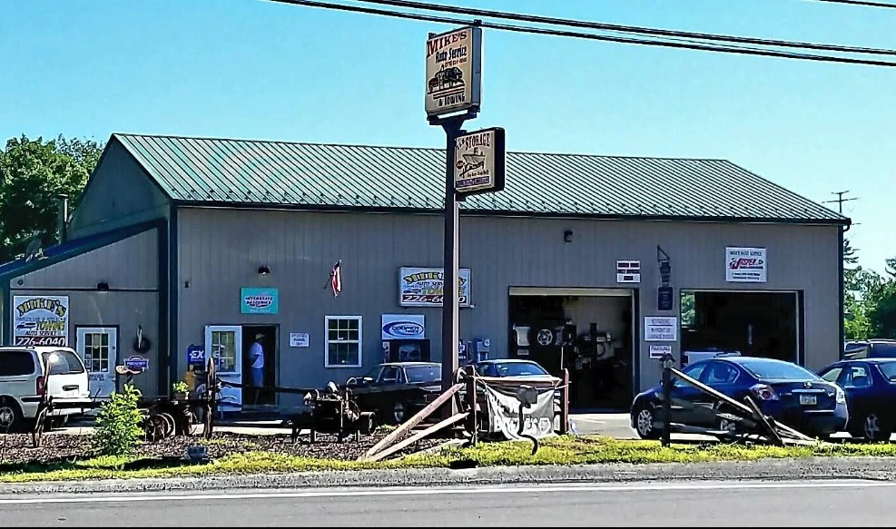

From emergency towing to complex engine work, Mike's team delivers honest, expert auto service at fair prices — right here in Hawley, PA.

Serving Hawley & the Pocono Mountains
Mike's Auto Services & Towing is a trusted car repair and maintenance shop located in Hawley, PA. We focus on comprehensive solutions — from engine diagnostics to transmission work and preventative maintenance.
Our skilled technicians use state-of-the-art technology to diagnose and fix issues right the first time, keeping you informed every step of the way.
Comprehensive auto repair and towing for drivers across Hawley, Lake Wallenpaupack, Honesdale, and all of Pike County.
Stuck on the road? Fast, reliable towing throughout Hawley and the surrounding Pocono Mountains area.
Learn moreCheck engine light on? Our state-of-the-art diagnostic equipment pinpoints issues fast, saving you time and money.
Learn moreFrom fluid flushes to full rebuilds, we handle all automatic and manual transmission repairs with precision.
Learn moreDon't compromise on safety. We inspect, repair, and replace brake pads, rotors, and calipers at competitive prices.
Learn moreRegular oil changes are the foundation of engine health. Quick, professional service with the right oil for your vehicle.
Learn moreStay ahead of breakdowns with scheduled tune-ups, filter replacements, belt inspections, and more.
Learn moreBattery, alternator, starter, wiring — our techs diagnose and repair complex electrical issues in all makes and models.
Learn moreFlat repairs, rotations, balancing, and pressure checks. We keep your tires in peak condition year-round.
Learn moreStay comfortable in every season. We diagnose and repair AC systems, heater cores, blower motors, and more.
Learn moreRough ride or pulling to one side? We inspect and repair shocks, struts, ball joints, and steering components.
Learn moreWe've built our reputation one honest repair at a time.
We explain what's wrong in plain English. You'll always know exactly what's being done and why.
You approve the estimate before we start. No hidden fees, no surprise charges at pickup.
We respect your time. Most repairs are completed promptly so you're not without your vehicle for long.
We live and work here. Our reputation in this community is everything to us.
"I had my car towed here after it broke down, and I can't say enough good things about the team. They were so quick to respond and got me back on the road in no time. The staff was friendly and kept me updated throughout the whole process. I will definitely be coming back."
"I took my vehicle in for a check-up and was really impressed by the level of customer service. The staff was incredibly knowledgeable and transparent with pricing — they provided a detailed estimate before starting any work. I'll be recommending them to friends and family."
"From the moment I walked in, the staff made me feel welcome. They explained everything without using confusing jargon, the shop was clean and organized, the service was quick, and the prices were reasonable. Highly recommend for trustworthy service!"
| Monday | 8:00 AM – 5:00 PM |
| Tuesday | 8:00 AM – 5:00 PM |
| Wednesday | 8:00 AM – 5:00 PM |
| Thursday | 8:00 AM – 5:00 PM |
| Friday | 8:00 AM – 5:00 PM |
| Saturday | 8:00 AM – 1:00 PM |
| Sunday | Closed |
1457 Purdytown Turnpike, Hawley, PA 18428